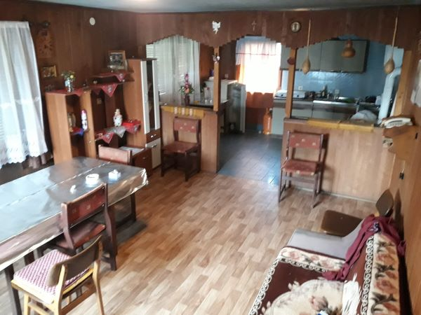
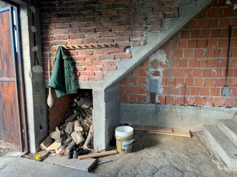
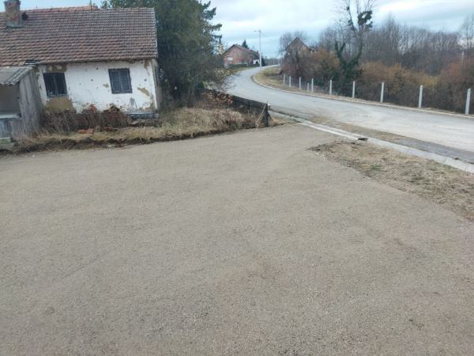
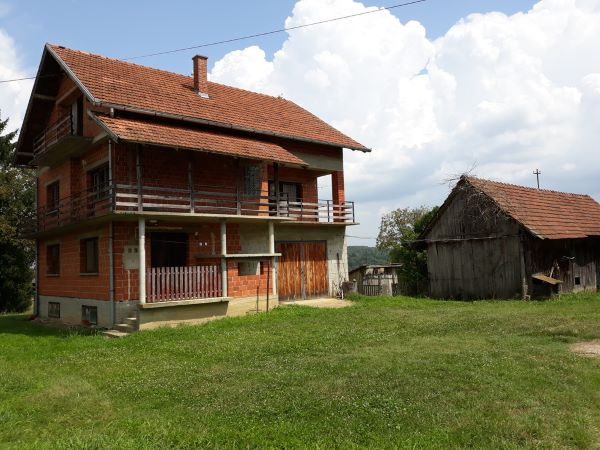

📸 Kuća na selu - kompletna obnova
📅 Trajanje: 14 mjeseci
📍 Lokacija: Samarica
📋 Radovi: Krov, dimnjaci, pregradni zidovi, stolarija, bravarija, žbukanje, keramika, centralno grijanje,el. i vodo-instalacije

Prije
Tamna soba, nizak plafon, drvena oplata, peć u kutu kuhinje

Poslije
Nova žbuka, stolarija, nova boja, svijetlo i prozračno
Kotlovnica

Prije
Garaža - neožbukano, uski dimnjak, zemljani pod

Poslije
Moderna kotlovnica koja grije cijelu kuću, Schiedel dimnjaci.
Dvorišna transformacija

Prije
Nepregledno dvorište s divljim rastinjem
Poslije
Nakon 60 kubika šljunka, valjak je napravio parking za 10 automobila.